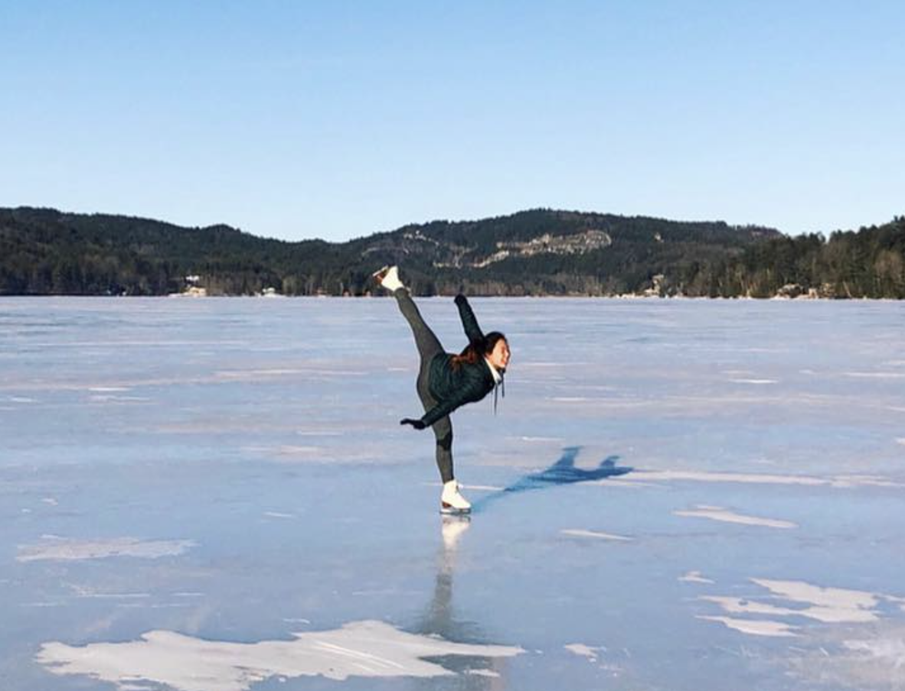

Eden Prairie, MN
Background

Skating has always been a huge part of my life. I grew up in Minnesota and remember the chilly winter days when the neighborhood dads venturing out onto the pond to check if it was safe, and our delighted squeals as we skated along the shoveled paths.
When I was 9, I watched Sasha Cohen compete at the 2006 Olympics. I clearly remember thinking, “I want to be just like her”, and a year later my mom signed me up for Learn to Skate.
I FELL IN LOVE. Sorry Shep, skating is my first true love, and I was obsessed. I went to bed with my ankles crossed to mimic proper jumping form while I slept. My screen name on neopets and webkinz was “foca17”, Future Olympic Champion at 17. I mentally choreographed programs to every pop song on the radio. I lived and breathed the dream.
For better or worse, the Olympic dream didn’t pan out due to financial reasons and a back injury when I was 14. I stopped skating competitively, but picked it up again in college with the Dartmouth Figure Skating Team with the most amazing team members who are still my closest friends.
 After graduation, I decided I had
accomplished everything I could in the sport and, with the pandemic
hitting, I hung up my skates for good.
After graduation, I decided I had
accomplished everything I could in the sport and, with the pandemic
hitting, I hung up my skates for good.
Or so I thought…
When I was 9, I watched Sasha Cohen compete at the 2006 Olympics. I clearly remember thinking, “I want to be just like her”, and a year later my mom signed me up for Learn to Skate.
I FELL IN LOVE. Sorry Shep, skating is my first true love, and I was obsessed. I went to bed with my ankles crossed to mimic proper jumping form while I slept. My screen name on neopets and webkinz was “foca17”, Future Olympic Champion at 17. I mentally choreographed programs to every pop song on the radio. I lived and breathed the dream.
For better or worse, the Olympic dream didn’t pan out due to financial reasons and a back injury when I was 14. I stopped skating competitively, but picked it up again in college with the Dartmouth Figure Skating Team with the most amazing team members who are still my closest friends.
Or so I thought…
The Inspiration
Cut to 3 years later. It’s 2022 and I’m watching the Olympics
with my roommates and excitedly explaining why “we are Jason
Brown stans”, why “it’s so unfair how her incorrect lutz edge
never gets called”, and why this doping drama is “actually the
most insane thing ever”. 2022 Olympics was a hot mess for figure skating,
but there were two bright spots: Kaori Sakamoto’s “Woman” program, a free
skate celebrating the strength of women as well as Nathan Chen’s “Rocketman” free skate, a
joyous program where he fully let loose at the end. These
performances lit a fire underneath me and got me back into
the sport.
The Goals
I’m an extremely goal-oriented person, so I decided on 4 things
I want to do:
Qualify for the 2024 Adult Figure Skating nationals (Masters Int/Nov Division). I’d need to place in the top 4 at the sectional qualifiers. I’ll try my best to do this without a coach ($$) and use phone videos to analyze my progress.
Improve my skating skills. Something I never focused on when I was a jump-crazy pre-teen. It would be way too expensive to try and test all my move-in-the-field levels, but I’d like to at least learn my novice, junior and senior test skills
Obtain three Level 4
spins. A Level 4 is the highest "level" a spin can
be, and the "4" refers to having 4 different "features" in
the spin. You can get a feature from a difficult entry,
exit, or position during the spin.
Skate on Lake Louise. My happiest moments in college included skating with my teammates on Lake Morey in Vermont. My roots in skating come from pond skating outdoors, and I never want to leave that behind.
The Journey
Washington, DC
March 2022: First sessions
I LOVE skating outside, and thankfully my muscle memory was
still there as I visited the DC Sculpture Garden rink with
friends.


Arlington, VA
May 2022: Purchasing New Skates
I've used second-hand skates my entire life and hoped that
the pair I used in college would still work. Sadly, the
boots were breaking down and I decided this passion was worth
investing in a new pair of Jacksons. I bought my boots and
blades online, molded the boots in my oven, and went to a
local rink to have my blades mounted professionally.


June-August 2022: Brief hiatus due to moving
+ travelling + getting COVID üò≠üò≠üò≠
Independence, MO
September-November 2022: Getting my existing
jumps back
This was a surprinsgly frustrating process. Consistency was
always my forte, but jumps like the double toe loop did not come
back easily. To help me through the process, I watched a ton of technique
videos on YouTube and practiced the jumps off-ice.

December 2022-January 2023: Improving back
and knee flexibility while travelling/moving
I'm travelling again and moving to California! I won't be on the
ice for about a month, so I'll continue working on my back
flexibility (which is abysmal right now) for my spins and
landing position, and improving my
knee/hip flexibility for spread eagles, ina bauers, and deeper
edges.
Marlborough, NH
üö®üö®üö® HAPPY PLACE ALERT üö®üö®üö®
Got to skate on a pond at Camp Glen Brook in New Hampshire!
Thank you Shep for filming :)

San Francisco, CA
February-May 2023: Getting my first Level 4 (ish) spin!!
I actually don't think this gif fully counts as a level 4 spin, but if done with a little more ~polish and pizzazz~ it would! It's a camel spin, difficult windmill transition (level 1), sit spin, sit back variation (level 2), non-basic position but pretend it's a little better (level 3), upright variation (level 4!!!)
Also I HIGHLY recommend the Yerba Buena ice rink - the natural light is AMAZING and the adult skating community is so supportive

Also I HIGHLY recommend the Yerba Buena ice rink - the natural light is AMAZING and the adult skating community is so supportive
Kapolei, HI
June-August 2023: Off-ice training
Spending 2 months in Hawaii? Hooray! Spending 2 months off the ice? Boooo. I did manage to make it to the rink twice, but otherwise I focused on off-ice jumps a couple times a week and worked on more spin position ideas. At some point I also developed a bunion / expansion of my left pinky metatarsal which made my boot EXTREMELY painful - thankfully Kevin, the skate tech at the rink, fixed the problem by punching out the boot.

San Diego, CA
September 2023 - February 2024: Focused Training + Creating a program
Time goes by SO QUICKLY! There's less than 6 months until Sectionals (qualification for nationals), and I don't have a program or a focused training plan. We just moved to San Diego, and I did a couple things:

1. Renewed my US Figure Skating membership and joined the San Diego Figure Skating Club
2. Created a training plan for my spins + jumps + skating skills + program choreography for each month leading up to Sectionals
3. Picked music - I stumbled upon the Muse song "Madness" one day and immediately clicked with it. It's going to make such a FUN PROGRAM
4. Joined the San Diego Ballet's free weekend adult classes to work on my posture and poise (some of the weakest parts of my skating)
Los Angeles, CA
February 2024: Stillwell Mid-Winter Warmup
My first competition was the Stillwell Mid-Winter Warmup - it's a friendly adult-only annual competition in LA that folks typically attend for feedback on their programs. I had started taking lessons with Coach Lexie, and in just 3 lessons I felt like I transformed my confidence in my jumps and refined my spins to be competition-ready.
Getting to the comp though proved to be a hot mess. I was already stressed the week leading up to it - my dear bike had just been stolen, I injured my ankle at a pump track and couldn't skate Sunday-Thursday before the Saturday competition, and I was emotionally dealing with an impending layoff. So, not the best headspace, but I went to bed Friday night with good thoughts only in my head.
The morning of the competition was equally disastrous - I set off in the trusty Prius to drive the 100 miles to the competition, but about 40 miles in THE CAR BROKE DOWN. OBDII reader informed me that the water pump failed which is not something you can continue driving with, so I made the quick decision to leave the car in San Clemente and uber to the rink.
 Somehow all this non-skating stress took my mind off the actual stress of the competition and I had a blast! It was a no-stakes event to begin with, but the women in my event were so friendly and supportive. I ended up skating a clean program, probably my very best run-through up to that point and I was pleased to have gotten the two Level 4 spins I was aiming for, plus positive "grade of execution" on all my elements! First place, babyyyy.
Somehow all this non-skating stress took my mind off the actual stress of the competition and I had a blast! It was a no-stakes event to begin with, but the women in my event were so friendly and supportive. I ended up skating a clean program, probably my very best run-through up to that point and I was pleased to have gotten the two Level 4 spins I was aiming for, plus positive "grade of execution" on all my elements! First place, babyyyy.
Afterwards, a San Diego coach gave me a ride back to San Clemente, I slept in the car, and then got it to the mechanic the next morning ☺️
Getting to the comp though proved to be a hot mess. I was already stressed the week leading up to it - my dear bike had just been stolen, I injured my ankle at a pump track and couldn't skate Sunday-Thursday before the Saturday competition, and I was emotionally dealing with an impending layoff. So, not the best headspace, but I went to bed Friday night with good thoughts only in my head.
The morning of the competition was equally disastrous - I set off in the trusty Prius to drive the 100 miles to the competition, but about 40 miles in THE CAR BROKE DOWN. OBDII reader informed me that the water pump failed which is not something you can continue driving with, so I made the quick decision to leave the car in San Clemente and uber to the rink.
Somehow all this non-skating stress took my mind off the actual stress of the competition and I had a blast! It was a no-stakes event to begin with, but the women in my event were so friendly and supportive. I ended up skating a clean program, probably my very best run-through up to that point and I was pleased to have gotten the two Level 4 spins I was aiming for, plus positive "grade of execution" on all my elements! First place, babyyyy.
Afterwards, a San Diego coach gave me a ride back to San Clemente, I slept in the car, and then got it to the mechanic the next morning ☺️
Santa Rosa, CA
March 2024: Pacific Coast Adult Sectionals (national qualifiers)
üö®üö®üö® New Dress Alert! üö®üö®üö®
I sewed a new dress that better fit my vision now that I know how to work with mesh and spandex!
Next up was Sectionals in Santa Rosa, California. This is the event I was working towards - the top 4 would then qualify for the national competition in Cleveland. Whereas I was not stressed about skating for the Stillwell competition, I was NOT in a good headspace for Sectionals.
I think I had placed a lot of pressure on myself to qualify for nationals in this ONE SHOT only - skating takes a lot of emotional and physical energy, and I had mostly stopped climbing, surfing, and biking since directing my energy into competition preparation, and Shep had reduced his "work from the beach surf days" so that I could use the car to go to the rink.
Without going into too much detail, I was mentally UNWELL in Santa Rosa. I flew into San Francisco a few days before the event, and stayed with my friend Mallory who took me surfing which definitely helped get my mind off the 3 minutes and 9 seconds culmination of all my hard work. But at the competition I was simply not OK - during the practice session just before my event, I almost broke down crying seeing the many other talented women on the ice and thinking wow it's going to take a miracle for me to end up in the top 4.
There were 18 women in my group, and I was going to skate 2nd. I noticed that two friends I made during Stillwell - Ashley and Julie - were in my 6-person warmup group which made me feel better. Ashley skated first, I didn't watch her but I remember visualizing my program and remembering the specific things to focus on for each jump and spin. After Ashley had gotten off the ice, I made a few quick laps around the rink, heard my name announced, put a smile on my face, got in starting position and whispered to myself, "Game time."
I was so laser-focused during this program. I turned any fear into determination and told myself I worked way too hard to let my last-minute freakouts prevent me from giving my all, and I SKATED A CLEAN PROGRAM!!!! It was one of my best run-throughs, the only thing I'm unahppy about is I ended the program facing the wrong direction oops!
I was so freaking stoked. When I took my bows I knew I had done everything I could to qualify for nationals, and now it would be a waiting game for the next 16 skaters.


In the end, I actually won Sectionals (?!?!) which is such an honor and still a bit unbelievable to me. I was not the best skater, but I skated the best that day. Off to nationals we go, and pressure's off!

I sewed a new dress that better fit my vision now that I know how to work with mesh and spandex!
Next up was Sectionals in Santa Rosa, California. This is the event I was working towards - the top 4 would then qualify for the national competition in Cleveland. Whereas I was not stressed about skating for the Stillwell competition, I was NOT in a good headspace for Sectionals.
I think I had placed a lot of pressure on myself to qualify for nationals in this ONE SHOT only - skating takes a lot of emotional and physical energy, and I had mostly stopped climbing, surfing, and biking since directing my energy into competition preparation, and Shep had reduced his "work from the beach surf days" so that I could use the car to go to the rink.
Without going into too much detail, I was mentally UNWELL in Santa Rosa. I flew into San Francisco a few days before the event, and stayed with my friend Mallory who took me surfing which definitely helped get my mind off the 3 minutes and 9 seconds culmination of all my hard work. But at the competition I was simply not OK - during the practice session just before my event, I almost broke down crying seeing the many other talented women on the ice and thinking wow it's going to take a miracle for me to end up in the top 4.
There were 18 women in my group, and I was going to skate 2nd. I noticed that two friends I made during Stillwell - Ashley and Julie - were in my 6-person warmup group which made me feel better. Ashley skated first, I didn't watch her but I remember visualizing my program and remembering the specific things to focus on for each jump and spin. After Ashley had gotten off the ice, I made a few quick laps around the rink, heard my name announced, put a smile on my face, got in starting position and whispered to myself, "Game time."
I was so laser-focused during this program. I turned any fear into determination and told myself I worked way too hard to let my last-minute freakouts prevent me from giving my all, and I SKATED A CLEAN PROGRAM!!!! It was one of my best run-throughs, the only thing I'm unahppy about is I ended the program facing the wrong direction oops!
I was so freaking stoked. When I took my bows I knew I had done everything I could to qualify for nationals, and now it would be a waiting game for the next 16 skaters.
In the end, I actually won Sectionals (?!?!) which is such an honor and still a bit unbelievable to me. I was not the best skater, but I skated the best that day. Off to nationals we go, and pressure's off!
Cleveland, OH
April 2024: US Adult Nationals
Well well well, Adult nationals!
At this point I was no longer stressed - coming back from Sectionals I decided to take a more relaxed mentality to training: I would still skate as much as I did before Sectionals, but I would allow myself the time to surf, climb, and BIKE ON MY NEW BIKE!! I was so much happier, Shep was so much happier, life was good. I was doing clean run-through after clean run-through, and feeling so prepared.
Suddenly it was the morning of my flight to Cleveland! I woke up to a text three hours before my flight that Frontier had CANCELLED my entire flight, for no apparent reason?! To this day I still don't know what happened, but in the moment I was presented with alternative 18-hour Frontier flights that would have me completely miss my event, and all the flights to Cleveland from other airlines were over $1,000 one-way due to the upcoming total solar eclipse and the NCAA Women's finals. I made a quick decision to fly to Pittsburgh instead, pick up a rental car, and drive to Cleveland where I would meet up with Shep who was flying from DC. As luck would have it, I met other passengers on my Pittsburgh flight who were in the same bought, and one of them offered a spot in their work-comped uber to Cleveland! It all worked out in the end, but that was a bit more exciting than I had planned haha.
And then it was competition day! I'm so glad Shep was able to come - I was so excited to have a buddy with me and he was super supportive the whole time. I had a practice session in the morning with all the skaters in my event, and it was a littttle bit nerve-wracking, everyone was looking so strong but I had to remind myself that I am strong too! It was pretty obvious that I had the weakest skating skills of the bunch, but there's nothing I can do about that now except hit all my elements and fake it til I make it.
Of the 12 women in the competition, I skated 6th, so last in the first six-person warmup. For me it's the least ideal spot to skate because it's a lot of sitting around and "losing" the warmup benefits in the 30 minute wait. I paced the locker rooms and blasted my music in my ears so I wouldn't hear everyone's scores before me. I had my phone with me and read Shep and my friends' encouraging last-minute messages, and finally (FINALLY) it was time! I got on the ice and immediately felt a little stiff. I wasn't nervous in the same way I was for Sectionals, I was just a little out-of-rhythm but tried to refocus. I got in my starting position and whispered "have FUN. You deserve this."
...and you know what? I did have fun! It was not my best performance - I fell on a double salchow, a jump I NEVER fall on, which threw me off guard. But I pushed that out of my mind, skated with conviction, landed my second double salchow (in combination!) and finished my program STRONG! I'm very proud of my performance. It was far from perfect but there were many positives to take away.
My performance put me in provisional 2nd place with 6 skaters to go. I moved back up to the stands with Shep and watched the rest of the skaters, and everyone really brought their A-game. I ended up dropping to 4th overall, pewter medalist (in the US, they give 4th place medals!). I was so excited to get a medal, slightly disappointed it wasn't a top 3 finish, but headed to the podium ceremony where the referee informed us that they had incorrectly inputted my Sit Spin into the system and after the correction I ENDED UP IN SECOND PLACE?!!! WHAT!! It was just a 0.4 point increase, but that was enough to bump me up to SILVER MEDALIST!


I was so freaking happy. Happy for myself, happy for the other medalists (especially Patty, who won the event with a killer performance to Madonna), and happy that I was content and don't need to do this again next year haha!
The adventure didn't stop there, though! On our flight back to San Diego, our Cleveland-Dallas leg got extremely delayed which made us miss our connection. This sounded awful at first given we'd be stuck in Dallas for 24 hours, but turns out Dallas was in the direct path of the total solar eclipse and we got front-row seats to the show!


At this point I was no longer stressed - coming back from Sectionals I decided to take a more relaxed mentality to training: I would still skate as much as I did before Sectionals, but I would allow myself the time to surf, climb, and BIKE ON MY NEW BIKE!! I was so much happier, Shep was so much happier, life was good. I was doing clean run-through after clean run-through, and feeling so prepared.
Suddenly it was the morning of my flight to Cleveland! I woke up to a text three hours before my flight that Frontier had CANCELLED my entire flight, for no apparent reason?! To this day I still don't know what happened, but in the moment I was presented with alternative 18-hour Frontier flights that would have me completely miss my event, and all the flights to Cleveland from other airlines were over $1,000 one-way due to the upcoming total solar eclipse and the NCAA Women's finals. I made a quick decision to fly to Pittsburgh instead, pick up a rental car, and drive to Cleveland where I would meet up with Shep who was flying from DC. As luck would have it, I met other passengers on my Pittsburgh flight who were in the same bought, and one of them offered a spot in their work-comped uber to Cleveland! It all worked out in the end, but that was a bit more exciting than I had planned haha.
And then it was competition day! I'm so glad Shep was able to come - I was so excited to have a buddy with me and he was super supportive the whole time. I had a practice session in the morning with all the skaters in my event, and it was a littttle bit nerve-wracking, everyone was looking so strong but I had to remind myself that I am strong too! It was pretty obvious that I had the weakest skating skills of the bunch, but there's nothing I can do about that now except hit all my elements and fake it til I make it.
Of the 12 women in the competition, I skated 6th, so last in the first six-person warmup. For me it's the least ideal spot to skate because it's a lot of sitting around and "losing" the warmup benefits in the 30 minute wait. I paced the locker rooms and blasted my music in my ears so I wouldn't hear everyone's scores before me. I had my phone with me and read Shep and my friends' encouraging last-minute messages, and finally (FINALLY) it was time! I got on the ice and immediately felt a little stiff. I wasn't nervous in the same way I was for Sectionals, I was just a little out-of-rhythm but tried to refocus. I got in my starting position and whispered "have FUN. You deserve this."
...and you know what? I did have fun! It was not my best performance - I fell on a double salchow, a jump I NEVER fall on, which threw me off guard. But I pushed that out of my mind, skated with conviction, landed my second double salchow (in combination!) and finished my program STRONG! I'm very proud of my performance. It was far from perfect but there were many positives to take away.
My performance put me in provisional 2nd place with 6 skaters to go. I moved back up to the stands with Shep and watched the rest of the skaters, and everyone really brought their A-game. I ended up dropping to 4th overall, pewter medalist (in the US, they give 4th place medals!). I was so excited to get a medal, slightly disappointed it wasn't a top 3 finish, but headed to the podium ceremony where the referee informed us that they had incorrectly inputted my Sit Spin into the system and after the correction I ENDED UP IN SECOND PLACE?!!! WHAT!! It was just a 0.4 point increase, but that was enough to bump me up to SILVER MEDALIST!
I was so freaking happy. Happy for myself, happy for the other medalists (especially Patty, who won the event with a killer performance to Madonna), and happy that I was content and don't need to do this again next year haha!
The adventure didn't stop there, though! On our flight back to San Diego, our Cleveland-Dallas leg got extremely delayed which made us miss our connection. This sounded awful at first given we'd be stuck in Dallas for 24 hours, but turns out Dallas was in the direct path of the total solar eclipse and we got front-row seats to the show!
San Diego, CA
April 2024 Onwards
Now that the season has wrapped up, I'm so happy to say that I'm still skating, just at a much more reduced and relaxed pace. This was the most exhausting yet creatively fulfilling journey, from learning new elements, to choreographing a program, to sewing a skating dress, to thinking about this literally every single moment of the day... but I'm so glad I gave it my all. I've got new goals now (none of them involve competing), and my focus is to continue making this my lifetime sport ⛸️✨ Thanks for following along!
Previous Project
Biking the East Coast Greenway
Next Project
Empire State Trail